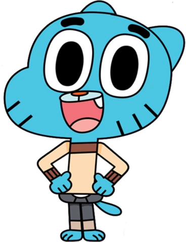
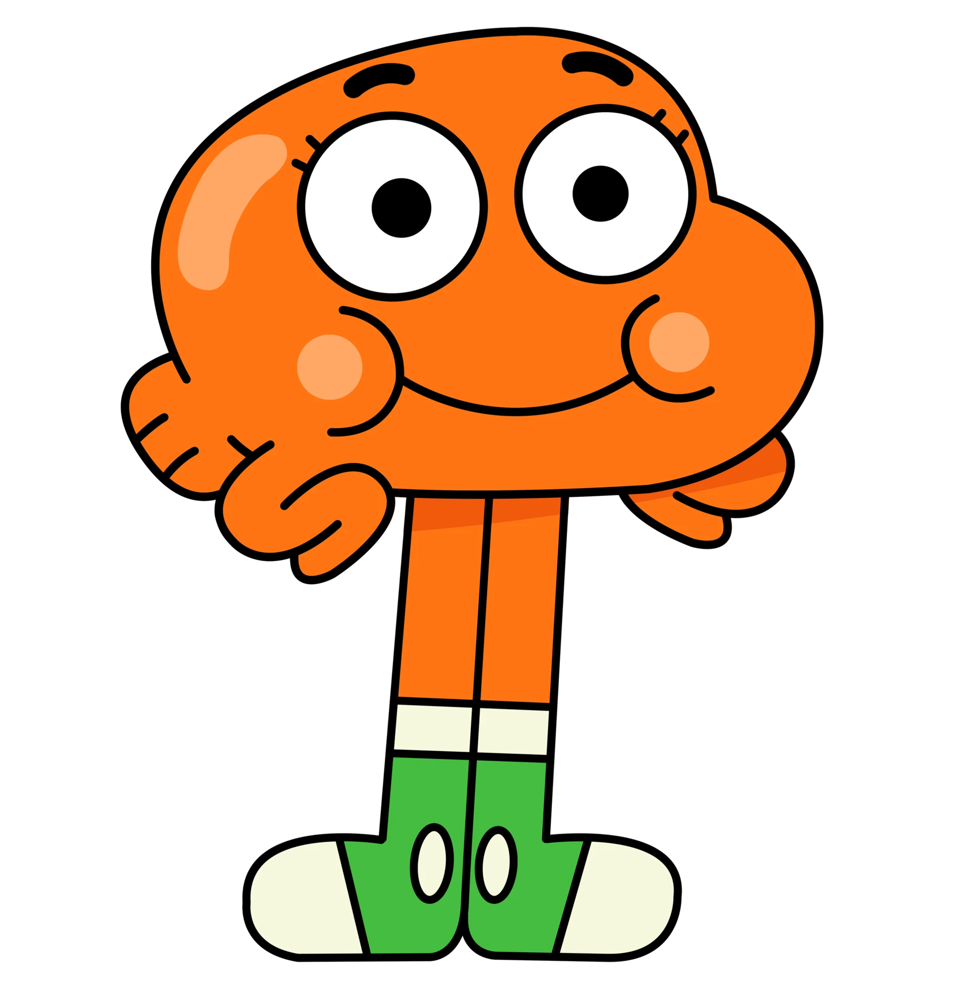
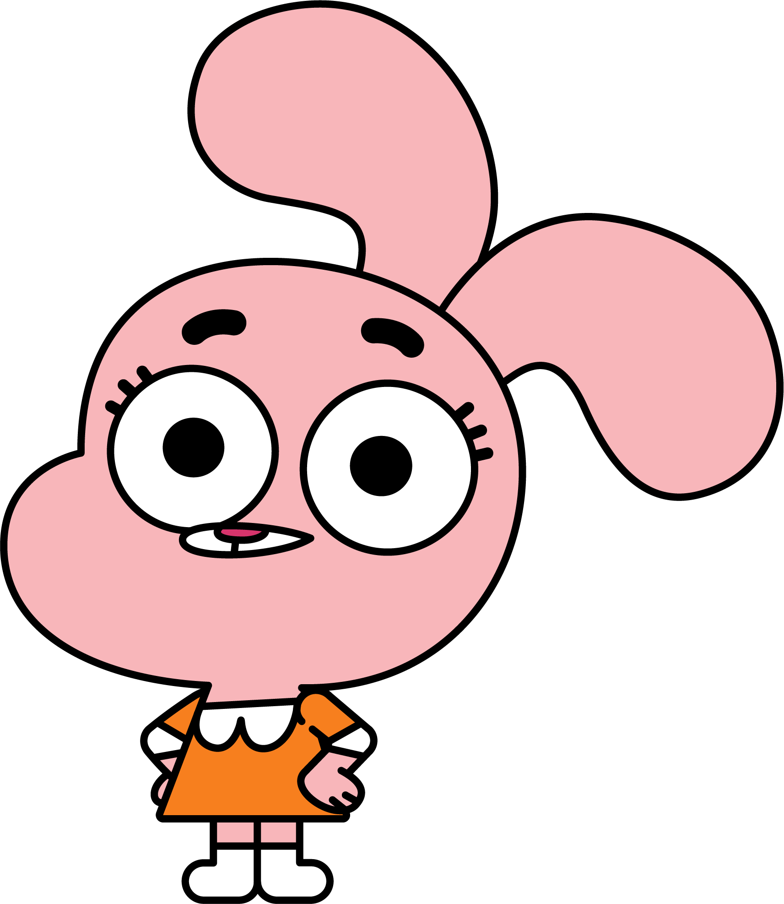
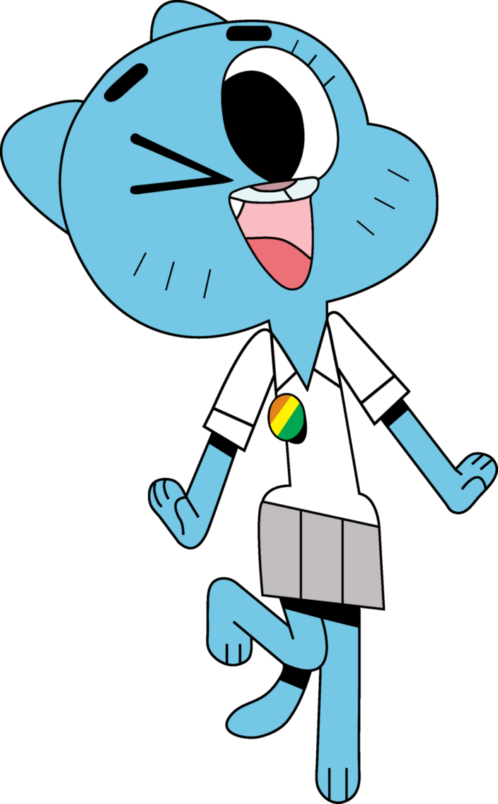
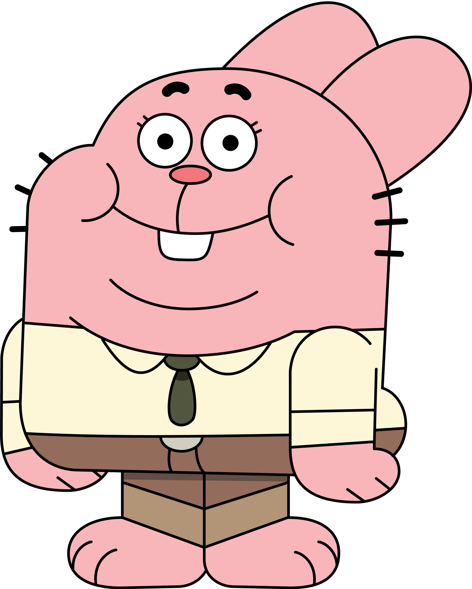

- Home
- Home
- Home
- Home
- Home
The Amazing World of Gumball
start the day with a funny video
Characters
Gumball
Gumball is a young blue carefree cat who goes on crazy adventures with his friends while living at Elmore, a town where the impossible is possible. Though showing
to have a reckless personality, he is always a kind hearted friend.

Darwin
He used to be Gumball's pet goldfish, but one day, he grew legs and generally adapted to life outside of water, so he was adopted by the Watterson family.

Anais
She is the youngest member of the Watterson family and the most rational, despite being only four years old. She is in 8th (and later 9th) grade at Elmore Junior High
which she attends with her older brothers, Gumball and Darwin,and is in a higher grade than them, as revealed in "The Others.

Nicole
Nicole is the mother of the Watterson family and is the backbone and only truly responsible member of the family. She is very dedicated to her family and would do
anything in her power to keep them comfortable and safe.

Richard
Unlike the traditional father, however, Richard is not wise, nor is he a good role model for his children in any way. Despite his misguided advice and uncouth mannerisms,
Richard has good intentions and loves his family all the same.
